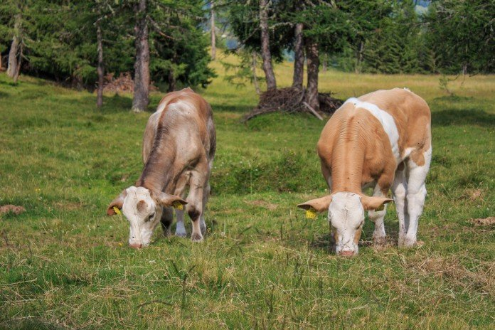

Start Thinking: Water for Livestock
Studies have consistently shown that livestock dry matter intake is related to water consumed. The more dry matter consumed, the more weight calves can put on and the more milk the momma cow can give.
Installing a sufficient water system using troughs, ponds or other means is key to a good grazing system and the farm manager can then effectively control grazing heights and provide proper rest periods for the plants.

The Importance of Water in Livestock Performance
Water in the body performs many functions — 60-80 percent of the animals live body weight is water.
- Helps eliminate waste products of digestion and metabolism.
- Regulates blood osmotic pressure.
- Helps produce milk and saliva.
- Transports nutrients, hormones and other chemical messages within the body.
- Aids in temperature regulation through evaporation of water from the skin and respiratory tract.
Performance Impact
Limiting water intake will reduce animal performance quicker and more drastically than any other nutrient deficiency.
Water Temperature and Animal Health
Access to cool, clean drinking water is essential to keep an animal’s internal body temperature within normal limits.
As water temperature increases from 70°F to 95°F, total water requirements for each animal will increase by about 2.5 times.

Drinking Space Requirements
What about drinking space? If group watering occurs, the tank should hold a minimum of 25 percent of the daily herd requirement and allow 5 to 10 percent of the animals to drink at one time, providing a space of two feet per head.
Example
40 head (cows and calves) × 10 percent = 4 head drinking at a time × 2’ per head = 8’ trough (one side).
Tank refill time should be no more than one hour.
When livestock travel individually to water, a tank that allows 2 to 4 percent of the animals to drink at one time and a flow rate that provides total daily needs in four hours is needed.
Drinking space and volume of water are important considerations to assure slow or timid animals adequate time to drink before the herd leaves the watering area.
Water Quality and Weight Gain
Multiple studies have shown additional weight gain when livestock have high quality water to drink.
- A heifer study at the University of Florida research showed that heifers with access to water pumped from a well or spring gained 23 percent more weight than heifers drinking pond water.
- Mississippi State researchers documented a 9 percent higher weight gain in nursing calves where the drinking water of the cow-calf pairs came from a trough compared to cattle drinking directly from a pond.
- Steers in the same study with access to water troughs instead of ponds demonstrated a 16 to 19 percent increase in weight.
- A Montana State study showed that 76 percent of beef cattle allowed free access to a pond for water, or water from the same source placed into a trough, preferred the trough over drinking from the pond.
Health Advantage
Livestock drinking from a trough have less risk of contracting illness compared to drinking from a pond.
Algae Growth in Water Systems
What causes algae growth in ponds and water troughs?
- Nutrients from runoff and leaching.
- Feed and decaying plant material (nitrogen and phosphorus).
- Fecal contamination of pond water.
- Entry of other nutrients causing algae blooms through nutrient loading.
When ponds become overgrown with algae, cattle will avoid drinking from them in favor of other water sources, if any exist.
Filamentous Green Algae
The green algae are common in lakes and certain types form green, stringy, often slimy-feeling masses that are a result of high levels of nutrients.
Typical growth begins underwater on the edges of ponds or trough where sunlight penetrates to the bottom.
As growth continues, gases are trapped under the algae mat and slowly rise until it reaches the surface.
Blue-Green Algae / Cyanobacteria
Blue-green algae were once included with the other algae, but are now classified with bacteria, called cyanobacteria.
Under nutrient rich conditions, these microscopic single-celled organisms can multiply rapidly to form extensive blooms that cause the water to become green colored.
Some blue-green algae contribute to potential health and water quality problems. A few species occasionally produce toxins known to kill wildlife and domestic animals.

Algae Control in Troughs or Tanks
Algae can clog overflows or possibly create toxic conditions in a livestock water trough.
Sunlight and warm temperatures, combined with nutrients, may promote algae growth until control measures need to be implemented.
- Periodically clean the tank to reduce nutrients and slow algae growth.
- Apply copper sulfate crystals every 2 to 4 weeks as needed.
- Dissolve crystals in warm water and pour throughout the tank to achieve best results.
- Chlorine bleach is another option to help reduce algae growth.
- Add 2 to 3 ounces of chlorine bleach for each 50 gallons of water capacity in the tank.
Important Note
Using copper sulfate in systems with metal pipes may increase deterioration of the metal over time. Some livestock, such as sheep, cannot tolerate high levels of copper.
Conclusion
Good quality, accessible water is a commodity you never have too much of.
If you have a wet place in a field or paddock, chances are, it would make a good spring development.
Clean water directly affects livestock health, milk production, weight gain, and farm profitability.
Investing in proper water systems, quality troughs, algae control, and clean water access can significantly improve overall livestock performance.
¿Querés mejorar la calidad de tu agua?
Solicitá asesoramiento sin costo y un asesor te contactará para evaluar tu caso.